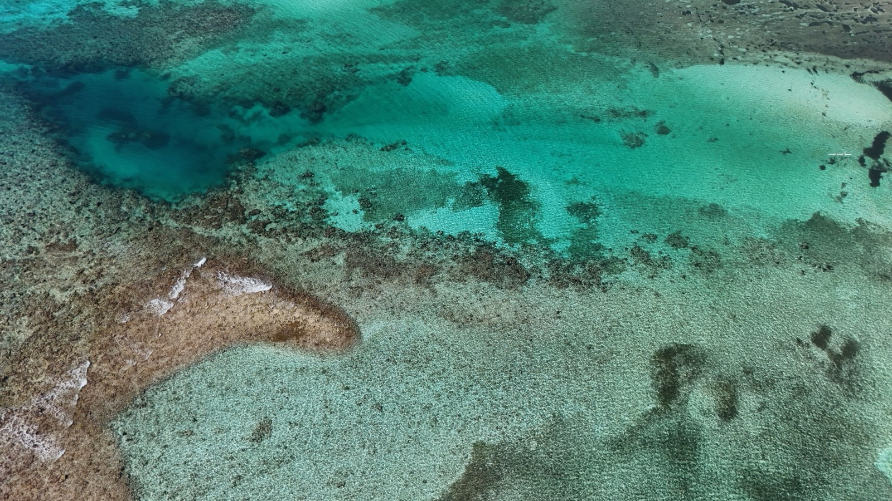
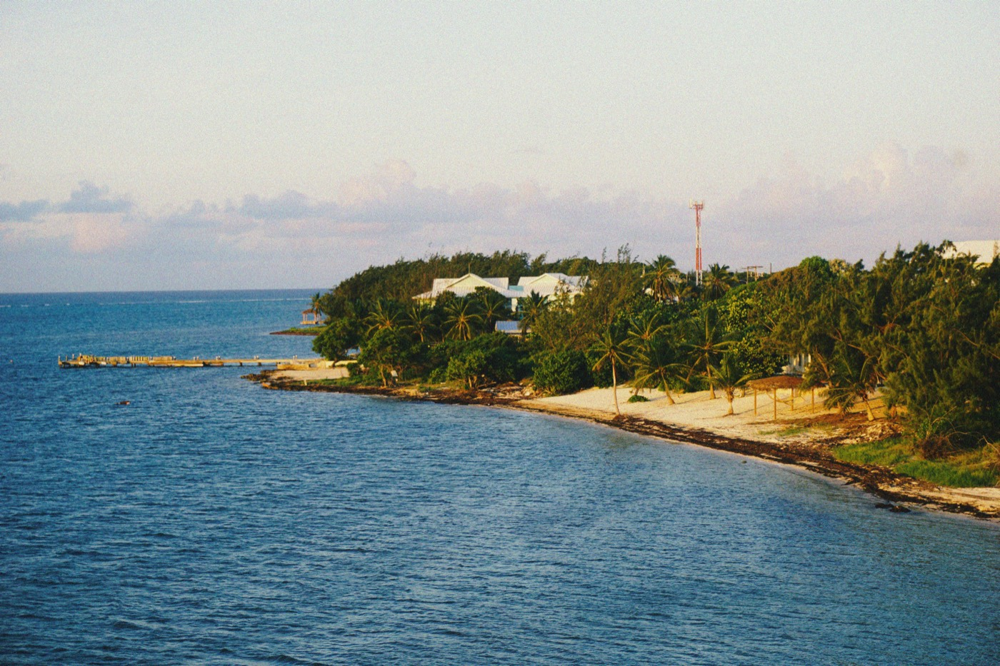

Moving to the Cayman Islands in 2026
Zero income tax, one of the world's safest places, and one of its most expensive. Here's how residency and work permits actually work (including the major 2026 immigration overhaul) and what living on Grand Cayman really costs.

The Cayman Islands offer a rare combination: zero income tax, no property tax, no capital-gains tax, and some of the lowest crime in the hemisphere. That package (plus a giant financial-services industry) has built one of the wealthiest, most polished societies in the Caribbean. The price of admission is literal: Cayman is one of the most expensive places to live in the region, and for most people the door in is an employer-sponsored work permit, not an investor visa.
At a glance
- The tax really is zero: no income, property, capital-gains or inheritance tax. But 22–27% import duty on almost everything you buy is the tax, collected at the dock instead of the payslip.
- Numbeo ranks Cayman the 2nd most expensive country on earth in 2026 (index 115.6 against New York at 100), behind only Bermuda.
- A job comes first for most people. Permits are employer-sponsored, and since 1 May 2026 first-time holders are locked to their sponsor for two years.
- The buy-in route is US$2.4M in developed residential property, in cash, and the true first-year cost is closer to US$2.76M once stamp duty and the issue fee land.
- Budget US$5,700–7,000/month for a couple living normally on Grand Cayman, before school fees.
- Safety is the real luxury: US State Department Level 1, the lowest advisory tier, which almost no Caribbean jurisdiction holds.
Zero tax, and what you pay instead
Cayman has no income tax, no property tax, no capital-gains tax, no inheritance tax and no VAT. That is not a loophole or a special regime you have to qualify for. There simply is no such legislation. US citizens still file with the IRS wherever they live, and a handful of US reporting forms catch people out, so get cross-border advice before you move.
But a government still has to be funded, and Cayman funds itself at the port. Understanding that single fact explains almost every price you will see on the island.
Import duty is the tax, and it is 22–27%
Cayman imports roughly 90% of its food and effectively 100% of everything else. Import duty is charged generally at 22% to 27% on most goods, and it is levied on the landed value, meaning the cost of the item plus the freight to get it there. So the duty compounds on the shipping, and the shipping is already high because everything arrives by container or by air.
| What you're importing | Duty rate | What that means in practice |
|---|---|---|
| Most general goods | 22% | Furniture, electronics, clothing, tools |
| Household non-food (cleaning, paper, toiletries) | 22–27% | The quiet driver of a high grocery bill |
| Processed & packaged foods | 17–22% | Anything in a box or a jar |
| Staples, rice, flour, milk, sugar | 0% | Zero-rated under the Customs Tariff Act |
| Motor vehicles | 29.5–42% | Scaled by CIF value; a US$30,000 car can land near US$42,000 |
| Personal effects, returning residents | CI$500 allowance | Undeclared goods can draw a 300% penalty |
A useful mental model: take the US shelf price of anything durable, add the freight, then add a quarter on top. That is roughly your Cayman price. It is why a household that spends US$800/month on groceries in Florida spends US$1,300–1,500 here for the same basket.
The 2026 duty review
In February 2026 the government announced a review of the duty code with the Chamber of Commerce, aimed at identifying specific foods where duty could come down. The Home Affairs Minister was explicit that any change would have to be revenue neutral, which means duty removed from one category is likely to reappear on another. Do not budget around a reduction that has not happened.
Stamp duty: the one big tax on buying
There is no annual property tax, but there is a one-time stamp duty on transfer of land, paid by the buyer:
- 7.5% of the purchase price or market value, whichever is higher, the standard rate for most transactions.
- 10% on properties valued at CI$2 million (US$2.4M) and above, which is exactly the threshold the investor-residency route requires, so the two collide.
- Caymanian first-time buyers get relief; foreign buyers do not.
On a US$1M condo that is US$75,000 due at closing, on top of legal fees of roughly 1%. On a US$2.4M residency purchase it is US$240,000. Budget it as part of the purchase, not as a closing cost, it is far too large to absorb late.
Getting in: work permits & the 2026 reforms
For most people a job comes first. Relocation runs on an employer-sponsored work permit issued by Workforce Opportunities & Residency Cayman (WORC), tied to one specific employer and one specific role. You cannot arrive and look for work. Financial services, law, accounting, insurance, construction and hospitality are where the permits concentrate.
Expect three to six months from signed offer to landing. The employer must first advertise the role locally and demonstrate no qualified Caymanian applied, that alone is several weeks, and it happens before your file is even opened.
What a permit actually costs in 2026
The Caymanian Protection (Fees) Regulations, 2026 came into force on 1 May 2026, covering 1,929 occupations across 44 sectors. The headline that mattered: the annual occupation fees themselves did not rise. What changed were the administrative fees around them, some by 150–400%.
| Fee | Amount (CI$) | ≈ US$ | Notes |
|---|---|---|---|
| Application fee: annual fee up to CI$3,500 | $100 | $120 | Tiered by the permit's occupation fee |
| Application fee, CI$3,501–$10,400 | $300 | $360 | |
| Application fee. Above CI$10,400 | $500 | $600 | Rose from CI$100 in 2026 |
| Annual occupation fee | $300–$32,400 | $360–$38,900 | Set by occupation; senior finance roles sit at the top |
| Express determination fee | Tiered, additional | , | New in 2026, for expedited processing |
| Sister Islands discount | 75% of Grand Cayman | , | Cayman Brac & Little Cayman |
In practice the employer pays these. The number still matters to you, because a CI$20,000 annual permit fee is a real line on your cost to the company and it shapes how hard they will fight to renew you.
The two-year lock, and the dependant threshold
Rules that changed on 1 May 2026
- Two-year employer lock. First-time permit holders granted after 1 May 2026 must remain with their sponsoring employer for at least two years. You cannot job-hop on arrival, which materially reduces your negotiating position in year one: take the offer you would still accept in month twenty-three.
- Dependant income thresholds rose. You now need at least CI$5,000/month (US$6,000) to bring one dependant, plus CI$1,000/month (US$1,200) for each additional one. A family of four therefore needs roughly CI$7,000/month before the application is even considered.
- The nine-year term limit still applies. Work permits cannot run past nine years of continuous residence. At that point you either win permanent residence or you roll over and leave, a genuine cliff that shapes how expat families plan.
The regime is mid-overhaul and figures moved twice in 2026. Confirm current terms at worc.ky or with a local immigration adviser before relying on any of this.
The remote-worker route (GCCP)
If you already earn abroad, the Global Citizen Concierge Programme skips the employer entirely. It grants up to 24 months of residence for people employed outside Cayman:
- US$100,000/year minimum income as an individual, US$150,000 with a spouse, US$180,000 with a spouse and/or dependants.
- Certificate fee US$1,469/year for a party of up to two, plus US$500/year per dependant, plus a 7% card processing fee. Non-refundable.
- You must rent or own property here, carry local health insurance within 30 days of arrival, and be physically present at least 90 days a year.
- You may not sell goods or services to any Cayman entity or person. Your income has to come from off-island.
- Processing runs about 3–4 weeks. Far faster than a work permit.
The catch: the GCCP is a two-year visit, not a foothold. It builds no path to permanent residence and the years do not count toward the nine-year PR clock. It is the right tool for testing whether you actually like the island, and the wrong tool for settling on it.
New rules from 1 May 2026
Cayman overhauled its immigration regime. First-time permit holders granted after 1 May 2026 must stay with their sponsoring employer for at least two years. Dependant income thresholds rose too: you now need at least CI$5,000/month to include one dependant (plus CI$1,000/month per additional). Rules are mid-overhaul, so verify current terms with a local adviser.
Residency & investor routes
There are three real doors. One takes nine years and a job, one takes US$2.4M in cash, and one takes US$1.2M and gives you no right to work.
| Route | What it takes | Duration | Right to work? |
|---|---|---|---|
| Work-based PR | 9 years continuous legal residence; scored on a 110-point system (occupation, education, investment, community involvement) | Permanent | Yes |
| R42, Certificate of Permanent Residence | CI$2M (US$2.4M) in developed residential property, own funds, no financing | Lifetime, no expiry | Not by default: separate variation required |
| R2, Residency Certificate (Independent Means) | CI$1M (US$1.2M) total, of which at least CI$500,000 in developed residential property on Grand Cayman | 25 years, renewable | No |
| GCCP | US$100k–180k annual income earned abroad | 24 months | Remote only, off-island employer |
What the US$2.4M route actually costs
The advertised number is the purchase price. It is not the cost. On a CI$2M (US$2.4M) qualifying purchase:
| Line item | Amount (US$) |
|---|---|
| Qualifying property purchase | $2,400,000 |
| Stamp duty at 10% (on properties of CI$2M and above) | $240,000 |
| Certificate issue fee (CI$100,000) | $120,000 |
| Per dependant (CI$1,000 each) | $1,200 |
| Legal fees, roughly 1% | $24,000 |
| Variation for the right to work (CI$500 + the relevant annual work-permit fee) | $600 + |
| First-year total, family of three | ≈ $2,787,000 |
Three conditions people miss. The property must be developed. Raw land does not qualify, no matter how expensive. The purchase must be made with your own funds, free of any outstanding financing, so a mortgage disqualifies you. And you must be physically present at least one day per year to keep the status alive.
Children lose dependant status at 18, extendable to 24 if in full-time tertiary education, after which they must qualify in their own right.
Just visiting
Entry is easy: citizens of 116 countries, including the US, UK and Canada, get up to six months visa-free. Nothing about that gives you the right to work, rent long-term without status, or import household goods at resident rates. Cayman is welcoming to visitors and deliberately hard to settle in; the two are not the same posture.
What it costs per month
In Numbeo's 2026 cost-of-living index Cayman scores 115.6 against New York at 100, second in the world, behind Bermuda at 135.8 and just ahead of the US Virgin Islands. Groceries rank third highest on earth. This is not "expensive for the Caribbean." It is expensive for anywhere.
Three realistic monthly budgets
Figures in US dollars. The Cayman dollar is pegged at CI$1 = US$1.20 and has been since 1974, so conversion is arithmetic, not a risk.
| Monthly line | Single, modest | Couple, comfortable | Family of four |
|---|---|---|---|
| Rent | $1,700 (older 1-bed, inland) | $3,200 (2-bed, near SMB) | $5,500–9,600 (3-bed house) |
| Electricity (CUC) | $280 | $490 | $700 |
| Water & sewerage | $70 | $120 | $180 |
| Internet & mobile | $115 | $165 | $200 |
| Groceries | $650 | $1,250 | $2,000 |
| Health insurance (mandatory) | $150–400 | $400–900 | $700–1,800 |
| Transport (car, fuel, insurance) | $350 | $600 | $850 |
| Eating out & social | $300 | $700 | $800 |
| School fees | : | , | $2,600–4,300 |
| Total | $3,600–3,900 | $6,900–7,400 | $13,500–20,400 |
The family column is the one that shocks people. Two children in private school plus a three-bedroom house is a US$160,000–245,000 a year lifestyle, which is precisely why Cayman salaries in finance and law look inflated from the outside and feel ordinary from the inside.
Is the Cayman Islands safe?
Yes, among the safest places in the Caribbean. A small, affluent, heavily-policed population keeps crime low, and everyday expat life feels secure. Ordinary big-town precautions are enough.
Housing & neighbourhoods
Rent is the single biggest variable, and the spread is enormous. An older one-bedroom well inland from George Town can be found around CI$1,200 (US$1,440); a new-build one-bedroom in South Sound clears CI$3,000 (US$3,600). Most long-term rentals come fully furnished with central air conditioning and high-speed internet included, which softens the arrival cost, you are not shipping a household in at 22% duty.
Day-to-day life for most expats happens in a surprisingly small triangle: George Town for work, the Seven Mile Beach corridor for weekends, and Camana Bay for groceries, cinema and school runs. The island is 22 miles long and you can drive its populated length in 40 minutes, so "which neighbourhood" is really a question about commute, budget and how close to the water you want to wake up.

What each area costs
| Area | Who lives there | 1-bed / mo (US$) | 3-bed / mo (US$) |
|---|---|---|---|
| Seven Mile Beach corridor | Finance and law, short-term arrivals, walk-to-beach premium | $2,600–4,200 | $6,000–12,000 |
| South Sound | Families; newer builds, quieter, still central | $2,200–3,600 | $5,400–9,000 |
| George Town & inland | Best value; older stock, short commute | $1,440–2,200 | $3,600–5,400 |
| Camana Bay / Cricket Square | Walkable, new, school-adjacent, priced accordingly | $2,800–4,500 | $6,500–11,000 |
| East End & North Side | Cheapest, most Caymanian, 45+ min to town | $1,200–1,900 | $2,800–4,500 |
| Cayman Brac / Little Cayman | Very quiet outer islands, limited services | $900–1,600 | $2,000–3,500 |
Most of the roughly 91,000 residents, drawn from more than 140 nationalities, live on Grand Cayman and cluster in the first four areas above. Cayman Brac and Little Cayman together hold only a couple of thousand people: genuinely remote, with real trade-offs in healthcare and schooling.
Power, schools & healthcare
Electricity is the bill that surprises everyone
CUC (the Caribbean Utilities Company) generates almost entirely from diesel, and the fuel cost is passed straight through to you. As of mid-2026 the all-in residential rate is about CI$0.3461/kWh (US$0.415), built from an energy charge of CI$0.1387, a fuel cost charge of CI$0.1800, fuel duty of CI$0.0132, a renewables surcharge of CI$0.0066, a regulatory fee of CI$0.0076, and a fixed facility charge of CI$6.96/month.
That is roughly three times the US average of about US$0.16/kWh. On average residential consumption of 1,158 kWh, the monthly bill runs about CI$408 (US$490), and summer air conditioning pushes it higher.
Two things to know before you sign a lease
First, the fuel charge is currently held at CI$0.18/kWh by a government relief cap running to 30 September 2026. Without it the all-in rate would be about CI$0.3918/kWh, roughly 13% higher. Budget for the uncapped number, because caps expire.
Second, in July 2026 the average bill rose CI$50.36 in a single month, almost all of it fuel. Electricity here is a commodity position, not a fixed cost. A house with poor insulation and old air conditioning can double the figures above. Ask any landlord for twelve months of actual CUC bills before you commit.
School fees, if you have children
Expats earning over CI$3,500/month with dependants on their permit are generally expected to educate privately, and the numbers reflect it, 46.7% of primary and 40.9% of high-school children on the island are in private schools.
| Stage | Typical cost | Notes |
|---|---|---|
| Preschool / daycare | CI$1,450–1,800/mo (US$1,740–2,160) | Some local daycares run CI$800/mo for 7:30am–5:30pm |
| Private primary | ≈ CI$1,875/mo (US$2,250) | Island Primary 2026/27, plus a CI$500 annual supply fee |
| Private high school | Up to ≈ US$26,000/yr | Cayman International School and peers |
| Application & deposits | CI$350 application + CI$1,000 acceptance deposit | Both non-refundable; placement deposits recur each February |
| Government school, non-Caymanian | CI$750–1,200/yr | Cheap, but most government schools are at capacity |
Sibling discounts are meaningful (commonly 10% for a second child) and paying the year in one instalment often earns a 2% discount, while spreading it over ten instalments adds a 5% surcharge. Places fill early. Apply before you accept the job, not after.
Health insurance is not optional
Coverage is mandatory under the Health Insurance Act, and your employer must provide it. The Standard Health Insurance Contract sets the floor at roughly CI$124/month (US$149) for ages 18–39, rising to about CI$167/month (US$200) at 50+. Those are minimums for basic cover; comprehensive family plans with reasonable deductibles run US$700–1,800/month.
Care itself is good. Health City Cayman Islands is a genuinely well-regarded tertiary hospital, and Grand Cayman has full private clinical services. Complex or unusual cases still fly to Miami, which is 70 minutes away. Confirm your policy covers overseas treatment and medical evacuation, because the basic tier often does not.
The mainland alternative
Almost everyone who researches Cayman is really chasing one of three things: low tax, safety, or warm water. It is worth knowing what those cost elsewhere before you commit to the most expensive version.
| Cayman Islands | Panama | Costa Rica | |
|---|---|---|---|
| Income tax on foreign income | None | None (territorial) | None (territorial) |
| Cost-of-living index | 115.6 | 42 | 52 |
| Residency threshold | US$2.4M cash, or a job | From ~US$200,000 property | From ~US$150,000 property |
| Build cost, quality home | US$400–650/sq ft | US$80–140/sq ft | US$90–160/sq ft |
| Electricity | US$0.415/kWh | US$0.17/kWh | US$0.12/kWh |
| Property tax | None | Exonerations widely available | 0.25%/yr |
| Safety tier (US State Dept.) | Level 1 | Level 2 | Level 2 |
Cayman wins decisively on safety and on the sheer simplicity of its tax position. It loses on everything you have to buy. The honest framing: Cayman is where you go when a Cayman salary is paying for it. If your income is portable and your goal is a home in the tropics, the same money builds something considerably larger on the mainland, and the residency door is open at a tenth of the price.
Is the Cayman Islands right for you?
- Great fit if you have a job offer in finance, law, insurance or accounting, the salary is calibrated to the cost, and the package usually carries health insurance and sometimes housing.
- Great fit if safety is your first criterion and you can afford the premium. Level 1 is a real, rare thing in this region.
- Great fit if you have US$2.4M in unencumbered cash and want a lifetime residence you only have to visit one day a year.
- Think twice if you are moving without a sponsor. There is no arrive-and-find-work path, and the GCCP leads nowhere permanent.
- Think twice if you have school-age children and are not being relocated by an employer who covers fees. Two children in private school is a US$50,000/year line.
- Think twice if what you actually want is land and a house of your own. At US$400–650/sq ft plus 10% stamp duty, Cayman is the most expensive way to buy sunshine in the hemisphere.
US$240,000 in stamp duty, or a finished house.
The stamp duty alone on a Cayman residency purchase is more than the full build cost of a three-bedroom house in Panama or Costa Rica. Both grant residency from around US$150,000–200,000, both tax foreign income at zero, and both put power on your meter at roughly a third of the CUC rate. If what you actually want is a home in the tropics rather than a Cayman salary, it is worth seeing the arithmetic side by side before you commit to any one island.
Frequently asked questions
Do you pay tax in the Cayman Islands?
No. Cayman has no income tax, no property tax, and no capital-gains tax. Revenue comes from import duties and fees. US citizens still have IRS filing obligations, so cross-border tax advice is recommended.
How do you move to the Cayman Islands?
For most people it starts with an employer-sponsored work permit through WORC, tied to a specific job. As of 1 May 2026, first-time permit holders must stay with their sponsoring employer for at least two years. Investment routes exist too. A ~KYD 2M (≈US$2.4M) real-estate investment earns a Certificate of Permanent Residence, or ~KYD 1M earns a renewable 25-year residency certificate.
How expensive is the Cayman Islands?
Very. Groceries run 40–80% above the US mainland, a one-bedroom rents around $1,800/month (family homes $8,000+), and health insurance is mandatory at $400–$1,500/month. It's one of the most expensive places to live in the Caribbean.
Is the Cayman Islands safe?
Yes, it's one of the safest places in the region, with very low crime driven by a small, affluent, heavily-policed population. Everyday expat life feels secure with normal precautions.
If there's no income tax, how does the government make money?
Import duty, work-permit fees, financial-services licensing and tourism. Duty runs 22–27% on most goods and is charged on the landed value including freight, which is the main reason groceries and household goods cost far more than on the US mainland. The tax is real, it is just collected at the port instead of on your payslip.
Can I move to the Cayman Islands without a job?
Only with money or with off-island income. The investor routes require CI$2M (US$2.4M) in developed property for a lifetime Certificate of Permanent Residence, or CI$1M (US$1.2M) for a renewable 25-year certificate with no right to work. Remote workers earning US$100,000+ abroad can use the Global Citizen Concierge Programme for up to 24 months, but it creates no path to permanent residence.
How much money do you need to live in the Cayman Islands?
Roughly US$3,600–3,900 a month for a single person living modestly, US$6,900–7,400 for a comfortable couple, and US$13,500–20,400 for a family of four with two children in private school. The largest lines are rent, school fees and electricity, which at about US$0.415/kWh runs close to three times the US average.
What is the stamp duty on buying property in the Cayman Islands?
7.5% of the purchase price or market value, whichever is higher, rising to 10% for properties valued at CI$2 million and above. It is a one-time tax paid by the buyer at closing. There is no annual property tax. On a US$1M purchase that is US$75,000 due at completion.
How long does it take to get permanent residence?
Nine years of continuous legal residence on the work-permit route, assessed against a 110-point system. Work permits also hit a nine-year term limit, so that year is a genuine cliff: you either qualify for permanent residence or you leave. The US$2.4M investment route grants permanent residence immediately, with no expiry.
Sources & verification
Figures in this guide were checked against primary and authoritative sources on 12 August 2026. Immigration, tax, and cost figures change, always confirm the current rules with the official body or a licensed professional before acting.
- WORC. Workforce Opportunities & Residency Cayman, work permits, the 2026 fee regulations, PR points system
- Cayman Islands Government, immigration reform, customs tariff, stamp duty
- Caribbean Utilities Company: standard billing rates, the per-kWh build-up, effective June 2026
- Numbeo. Cayman Islands cost of living, the 115.6 index figure and grocery ranking
- Cayman Resident, rents, school fees, utilities, import duty tables
- PwC Worldwide Tax Summaries: Cayman Islands, confirmation of no VAT, no property tax, 22–27% import duty
- US State Department. Cayman Islands, Level 1 travel advisory
How we handled the currency. The Cayman dollar has been pegged at CI$1 = US$1.20 since 1974. Where a source published in CI$ we have shown both. Where sources disagreed (as they did on the 2026 work-permit application-fee tiers) we used the government-hosted fee schedule and say so.